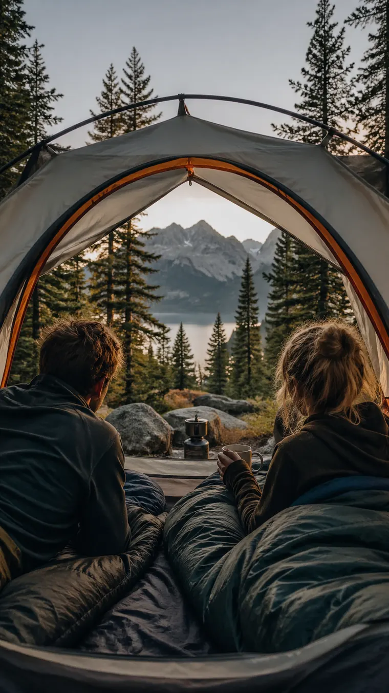
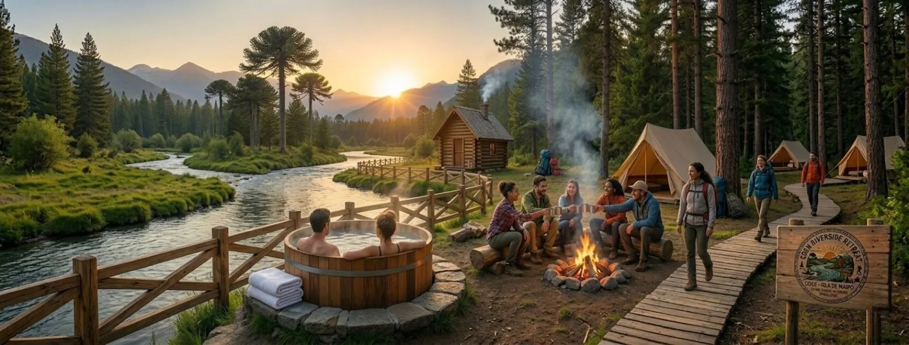
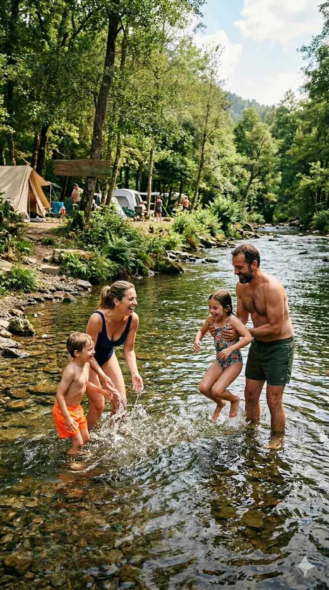
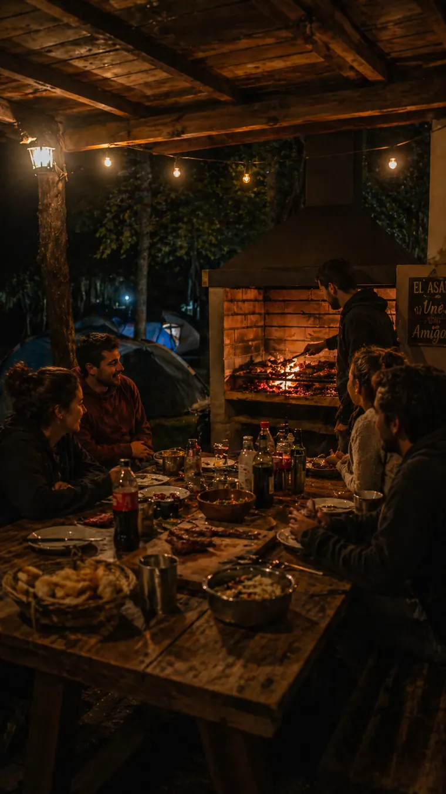
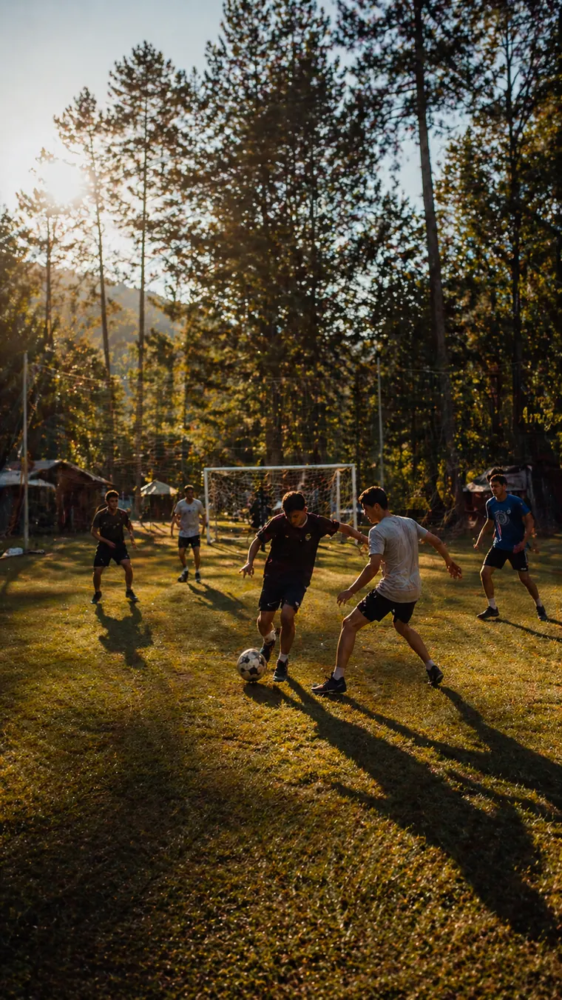
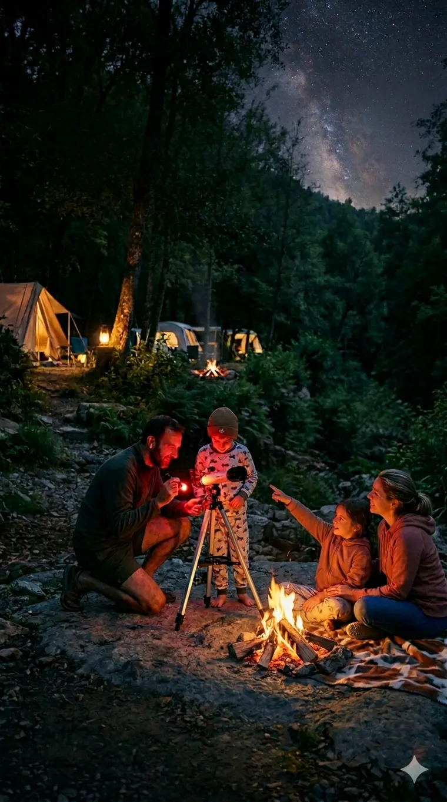
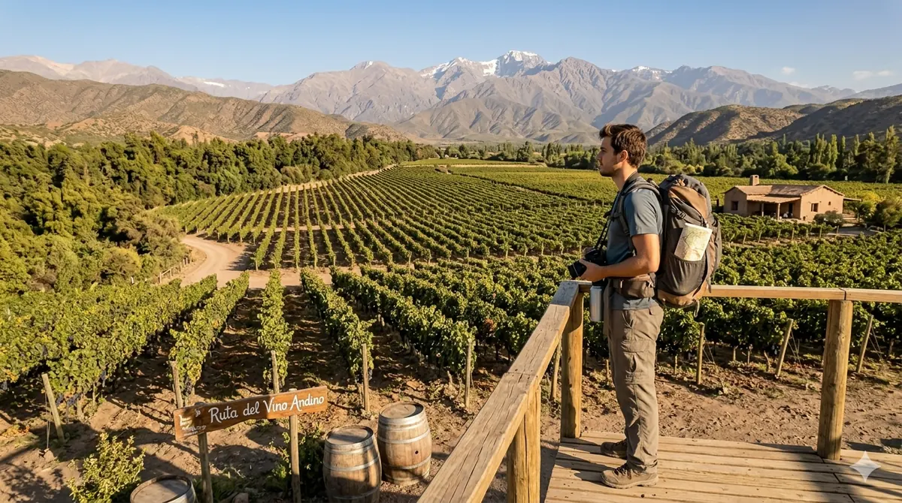
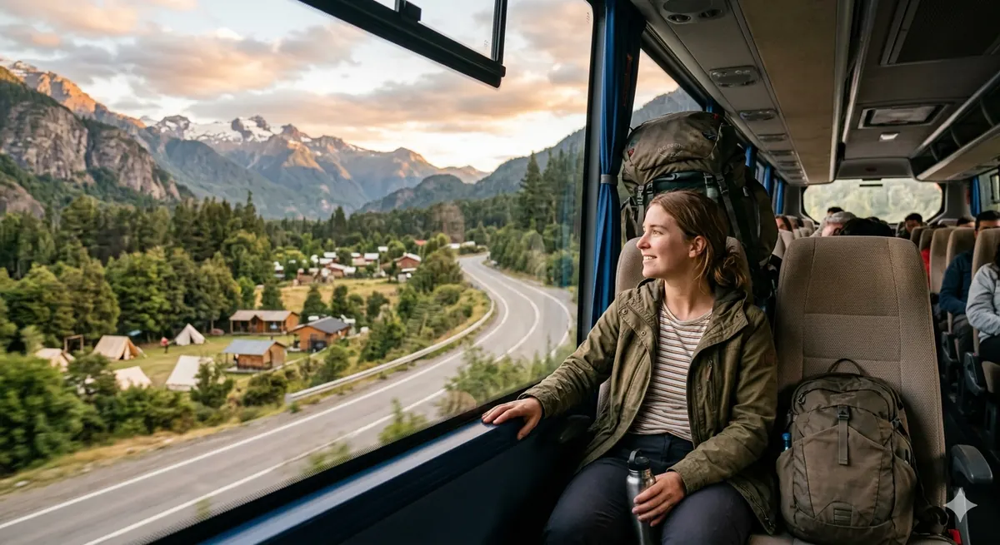

01
Despertar en la carpa
Áreas verdes amplias y sombra natural para armar tu carpa y empezar el día sin apuro.
Abierto todos los días, las 24 horas · Isla de Maipo

Centro Turístico Camping El Edén es un centro de recreación familiar a orillas del río Maipo. Comodidad dentro de la naturaleza, sin intervenirla: áreas verdes, piscinas, quinchos y, cuando cae la noche, tinajas de agua caliente al aire libre.


Mantenemos el terreno rústico a propósito: pasto, sombra natural y la ribera del río. Lo que agregamos es lo que hace falta para que una familia completa lo pase bien un día entero sin tener que salir a buscar nada.
Es lo que más destacan quienes nos visitan. Los niños corren, juegan y se bañan mientras los adultos descansan de verdad.
Piscina de adultos y piscina infantil por separado, más la orilla del río Maipo. De noche, tinajas y sauna seco.
Asaderas, mesas y zonas de picnic por todo el terreno. Tú traes la carne y el hielo; el fuego y la sombra ya están puestos.
En plena Isla de Maipo, zona de viñas y caminos rurales, a poco más de 50 km de Santiago por la Autopista del Sol.
Abrimos todos los días del año, las 24 horas. Vienes por el día, te quedas una noche o armas un fin de semana.
Espacio dentro del recinto para celebraciones, paseos de curso, reuniones de empresa y cumpleaños.
Dieciséis servicios repartidos por el terreno, pensados para que llegues, te instales y no tengas que moverte de aquí.
Así se arma una visita típica: agua, fuego, juego y descanso, sin salir del recinto.

Áreas verdes amplias y sombra natural para armar tu carpa y empezar el día sin apuro.

Asaderas y mesas listas: tú pones la parrilla, nosotros la sombra.

Cancha de futbolito, taca-taca, ping-pong y juegos infantiles para cuando baja el sol.
Estamos junto al río: caminatas, tardes de sombra junto al agua y pesca.

Lejos de las luces de la ciudad, el cielo se abre. Y las tinajas te esperan desde las 21:00.
Desliza para ver más
Cuando el día termina y los niños ya duermen, empieza el otro plan. Tinajas de agua caliente y sauna seco bajo el cielo abierto, con acceso libre dentro del horario: entras, sales y vuelves las veces que quieras.
Valores referenciales: te los confirmamos al momento de reservar.
Cuatro formas de visitarnos, con tarifas diferenciadas para adultos y niños.
Día completo con acceso a piscinas, áreas verdes, juegos y zonas de picnic.
La misma entrada del día, con alimentación incluida. Llegas y no te preocupas del almuerzo.
El fin de semana clásico: armas la carpa, aprovechas la tarde y de noche pasas a las tinajas.
Para desconectarse de verdad, con todas las instalaciones del recinto a disposición.
Los valores cambian según temporada y cantidad de personas. Pagos disponibles con Flow.
Estamos en Calle Crucero 488, sector La Villita, Isla de Maipo. Son unos 55 kilómetros desde Santiago centro y cerca de una hora en auto, dependiendo del tráfico.
La vía más directa desde Santiago hacia el sector poniente del valle del Maipo, y la salida natural hacia Talagante y Melipilla.
Sigue la señalización hacia Talagante y continúa por el camino a Isla de Maipo. En ese tramo se acaban los edificios y empiezan las viñas.
Dentro de Isla de Maipo, dirígete al sector La Villita, hacia la ribera del río. Si el camino se pone más verde, vas bien.
Ahí está la entrada del camping, con estacionamiento dentro del recinto. Si te pierdes, escríbenos y te guiamos.
Estamos en pleno Valle del Maipo, una de las zonas vitivinícolas más reconocidas de Chile. Si te quedas más de un día, vale la pena salir a recorrer los alrededores.

Valle del MaipoIsla de Maipo es tierra de viñedos. Un recorrido por la zona vitivinícola del valle es el complemento perfecto para un día de adultos.
El río marca el paisaje del sector y estamos justo a su orilla: caminatas, pesca y tardes de sombra junto al agua.
Los caminos rurales de la comuna son planos y de poco tráfico: perfectos para pedalear temprano o caminar al atardecer.
Disponibles dentro del camping con valor adicional, para conocer el sector al ritmo del campo.
Lo que más nos preguntan: cómo llegar, qué hacer en la zona y qué llevar para acampar en familia.

Cómo llegarQué autopista tomar, dónde salir, cuánto se demora realmente y a qué hora conviene partir para no pillar taco un domingo.
Leer la guíaLo que ofrece la comuna más allá del camping: la ruta del vino, la ribera del Maipo y los caminos para andar en bicicleta.
Leer la guíaConsejosQué llevar, cómo ordenar el día con niños y cómo aprovechar las tinajas nocturnas sin desarmar la rutina de los más chicos.
Leer la guíaEn Calle Crucero 488, sector La Villita, comuna de Isla de Maipo, Región Metropolitana. Son unos 55 km desde Santiago centro, cerca de una hora en auto por la Autopista del Sol (Ruta 78).
El recinto está abierto todos los días, las 24 horas. Para coordinar tu llegada, escríbenos antes por WhatsApp al +56 9 4529 9443.
Manejamos tickets de full day, full day con comida incluida y paquetes de 2 días / 1 noche y 3 días / 2 noches, con tarifas diferenciadas para adultos y niños. Los valores varían según la temporada, por eso preferimos confirmártelos por WhatsApp para la fecha que necesitas. Aceptamos pagos a través de Flow.
Son un servicio aparte, disponible para campistas alojados en el recinto. El valor es de $15.000 por persona, con acceso libre entre las 21:00 y la 01:00. Desde 4 personas, queda en $10.000 por persona.
Sí. Tenemos piscina de adultos y piscina infantil por separado, además de juegos infantiles en un área propia dentro del recinto.
Claro. El camping cuenta con asaderas y mesas, además de zonas de picnic distribuidas por las áreas verdes.
Sí, contamos con un salón de eventos dentro del recinto. Escríbenos con la fecha, la cantidad de personas y el tipo de evento, y te enviamos una propuesta.
Sí. El recinto tiene baños, camarines y duchas con agua caliente, además de estacionamientos dentro del camping.
Completa el formulario y se abrirá WhatsApp con tu mensaje listo para enviar. Te confirmamos disponibilidad y valores para tu fecha.
Calle Crucero 488, La Villita
Isla de Maipo, Región Metropolitana
Abierto todos los días, 24 horas
Piscinas, quinchos, áreas verdes y tinajas bajo las estrellas, a orillas del río Maipo. Escríbenos y coordinamos tu visita hoy mismo.